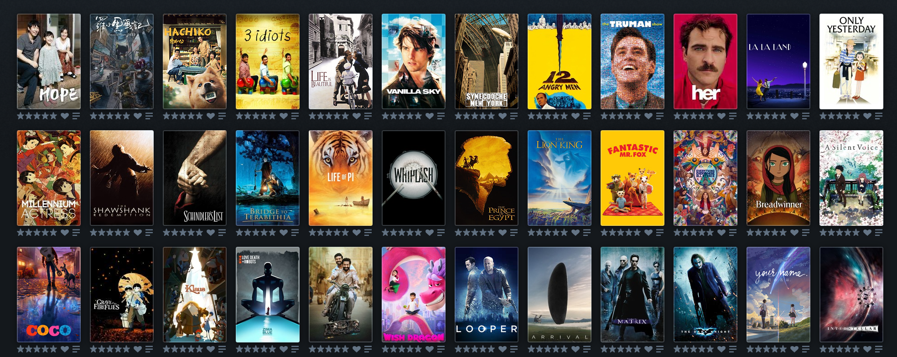
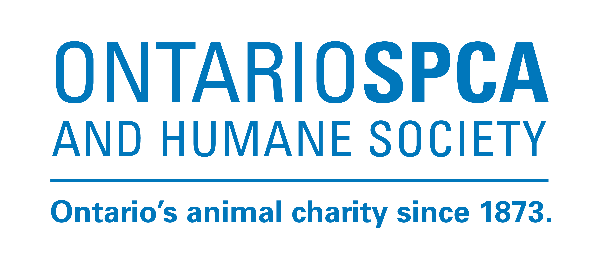
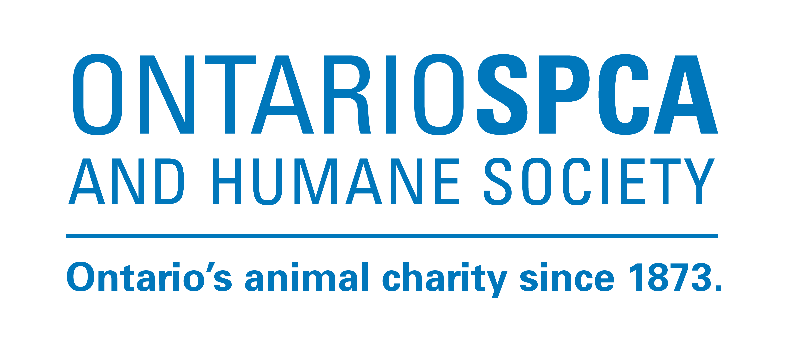
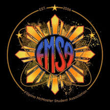
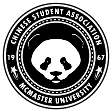

Hobbies
Writing
I'm a speculative fiction author whose stories often include elements of Chinese or Filipino culture. I like writing about the ways new technologies impact our world, as well as how our roots and traditions shape us today. I like to tie speculative concepts to deeply human stakes and use speculative elements to amplify emotional truths, leaving readers thinking long after the last line. Click here to check out my portfolio!
Movies
I enjoy watching movies, especially action, sci-fi, and animated genres.
Interests
Dogs
I'm a dog lover, and I'm interested in volunteering for an animal shelter organization such as SPCA.
 

Filipino McMaster Student Association
I am a general member of the Filipino club at McMaster. I am proud of my heritage and culture.
McMaster Chinese Student Association
I am a general member of the Chinese club at McMaster. I am intrested in learning more about Chinese culture and language to reconnect with the oldest roots in my family.
